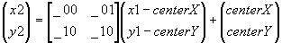

#include <nitro/gx/g2.h>
void G2_SetBG2Affine(
const MtxFx22 * mtx,
int centerX,
int centerY,
int x1,
int y1
);| mtx | 変換行列へのポインタ |
| centerX | 回転中心座標のX成分 |
| centerY | 回転中心座標のY成分 |
| x1 | 回転前座標のX成分 |
| y1 | 回転前座標のY成分 |
なし。
BG2のアフィン変換を設定します。アフィン変換後の点(x2, y2)は以下の式で求められます。

Ver. 2004/01/19